▲ 카멜리아힐의 동백나무와 붉은 벤치. 촬영 시기는 자료에 없다. ⓒ 한국관광공사 · 공공누리 제1유형
"제주 동백 보러 가려는데, 위미랑 카멜리아힐이 같은 곳 아닌가? 입장료는 어디서 내지?" 이 글은 2026년 10월 21일 기준으로 한국관광공사 자료와 카멜리아힐 공식 사이트(관람요금·관람시간표)를 바탕으로 두 곳의 위치, 개방·운영 조건, 동백 시기를 정리했다. 결론부터 말하면 두 곳은 서로 다른 장소다. 위미 동백나무 군락은 남원읍 위미리의 마을 군락이고, 카멜리아힐은 안덕면의 동백 수목원이다. 대한민국 구석구석 바로가기
이름이 비슷하고 둘 다 겨울 동백으로 알려져 있어 한 곳으로 착각하기 쉽다. 가을인 지금은 아직 이르지만, 동백은 늦가을부터 피기 시작하는 꽃이라 일정은 미리 잡아 두는 편이 낫다.
💡 먼저 결론
위미동백나무군락(서귀포시 남원읍 위미중앙로300번길 15)은 한국관광공사 정보상 상시 개방이고 연중무휴이며 주차 가능으로 표기돼 있다. 카멜리아힐(안덕면 병악로 166)은 500여 종 6000여 그루 동백이 있는 수목원으로, 동절기(11월~2월) 08:30~18:00, 입장 마감 17:00, 연중무휴이고, 공식 요금표 기준 일반 입장료는 성인 12,000원·청소년 10,000원·어린이 9,000원이다.
1. 먼저 바로잡기 — 위미 군락과 카멜리아힐은 다른 곳
한국관광공사 정보를 기준으로 두 곳을 나란히 놓으면 차이가 분명하다. 좌표로 잰 직선거리는 약 29km로, 카프리즘이 계산한 값이며 실제 도로 거리는 이보다 길다. 제주 서쪽 안덕면과 남쪽 남원읍에 따로 있어 한 번에 둘러보려면 이동 계획이 필요하다.
| 구분 | 위미동백나무군락 | 카멜리아힐 |
|---|---|---|
| 주소 | 서귀포시 남원읍 위미중앙로300번길 15 | 서귀포시 안덕면 병악로 166 |
| 성격 | 마을 군락(현맹춘 할머니가 심은 동백 숲) | 동백 수목원, 숙박·갤러리 등 시설 갖춤 |
| 이용 시간 | 상시 개방 | 동절기 08:30~18:00(입장 마감 17:00) |
| 휴무 | 연중무휴 | 연중무휴 |
| 입장료 | 없음(표기 없음) | 성인 12,000원·청소년 10,000원·어린이 9,000원(공식 요금표) |
| 문의 | 제주관광정보센터 064-740-6000 | 064-759-0088 |
참고로 같은 서귀포에 있는 오설록 티뮤지엄과 카멜리아힐도 별개의 장소다. 두 곳을 반나절로 묶는 방법은 오설록과 카멜리아힐 반나절 코스 기사에서 다뤘으므로, 이 글은 위미 군락을 중심에 두고 겨울 동백 시기와 이용 조건을 정리한다.
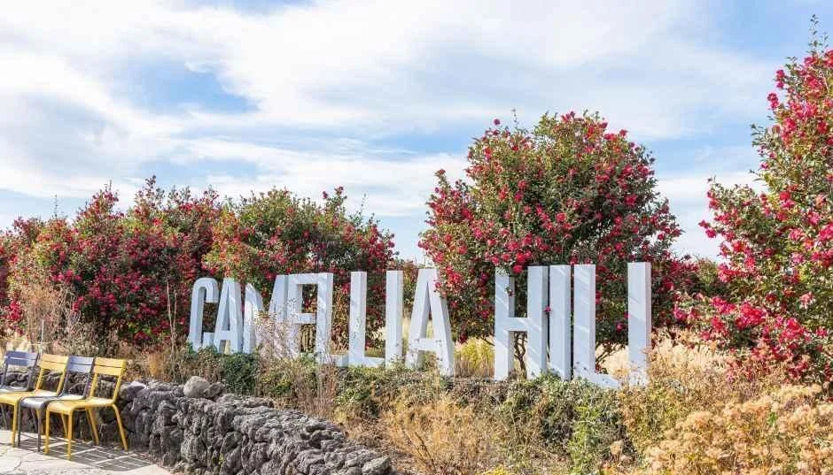
▲ 카멜리아힐의 글씨 조형물. 촬영 시기는 자료에 없다. ⓒ 한국관광공사 · 공공누리 제1유형
2. 위미 동백나무 군락 — 한 사람이 바람막이로 심은 숲
한국관광공사 소개문에 따르면 이 군락은 현맹춘(1858~1933) 할머니의 얼이 깃든 곳이다. 17세에 위미 마을로 시집온 할머니가 해초 캐기와 품팔이로 어렵게 모은 돈으로 황무지를 사들이고, 모진 바람을 막으려고 한라산의 동백 씨앗을 따다 뿌린 것이 지금의 숲이 됐다고 한다. 동백이 꽃이기 이전에 방풍림이었다는 설명이 인상적이다.
같은 소개문은 사철 푸른 동백과 가을의 감귤원이 어우러져 제주 정취가 난다고 적었다. 동백나무는 차나무과의 상록소교목이며, 꽃은 늦가을부터 이른 봄에 걸쳐 붉게 핀다. 사진의 군락 안내판도 이 유래를 담고 있다. 대한민국 구석구석 바로가기
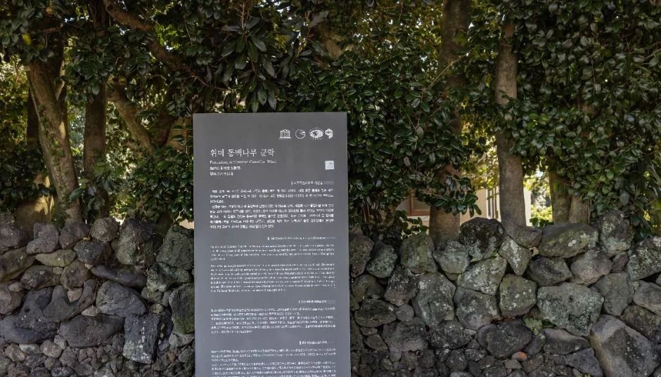
▲ 위미동백나무군락의 안내판. 촬영 시기는 자료에 없다. ⓒ 한국관광공사 · 공공누리 제1유형
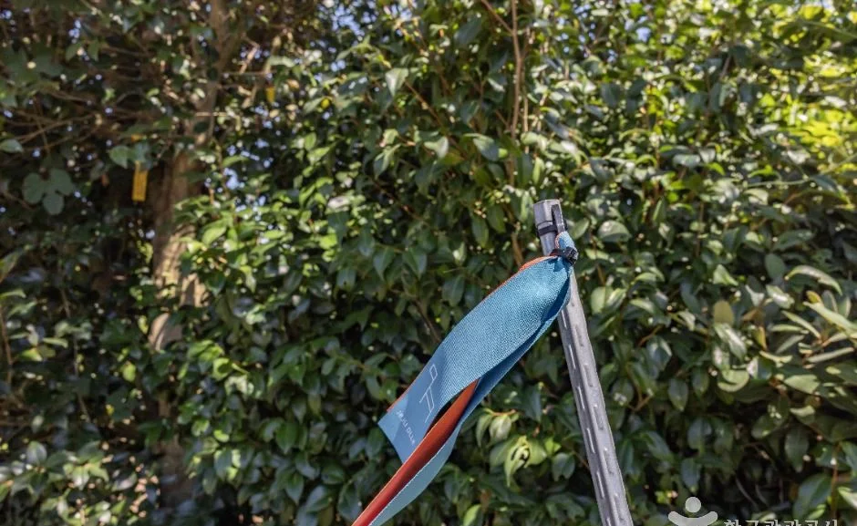
▲ 위미동백나무군락 소개 사진 묶음 속 푸른 잎 수림. 수종은 사진 설명에 없고 촬영 시기도 자료에 없다. ⓒ 한국관광공사 · 공공누리 제1유형
3. 위미 군락 이용 정보 — 개방은 상시, 확인할 점은 따로 있다
한국관광공사 정보는 이용 시간을 "상시 개방", 휴무를 "연중무휴", 주차를 "가능"으로 표기한다. 입장료 항목은 따로 없다. 다만 주차장의 위치와 요금, 일부 구간의 출입 가능 여부는 공식 자료에서 확인하지 못했다.
| 항목 | 확인한 내용 (2026-10-21 기준) | 비고 |
|---|---|---|
| 이용 시간 | 상시 개방 | 한국관광공사 정보 기준 |
| 휴무 | 연중무휴 | 한국관광공사 정보 기준 |
| 입장료 | 표기 없음 | 현장·제주관광정보센터 확인 |
| 주차 | 가능 | 주차장 위치·요금은 확인하지 못함 |
| 개화 | 늦가을~이른 봄에 걸쳐 붉게 핌 | 해마다 절정 시기는 다름 |
정비 중이라 탐방로 안으로 들어갈 수 없었다는 후기들이 있으나 공식 안내로는 확인하지 못했다. 마을 안길은 좁으므로 주변은 천천히 달리는 편이 안전하다. 비짓제주나 제주관광정보센터에서 현재 출입 상황을 먼저 물어보자. 비짓제주 바로가기
혼동하기 쉬운 곳이 하나 더 있다. 한국관광공사 TourAPI에는 위미 군락 항목 아래 올라온 사진 묶음 안에 "제주동백수목원" 간판과 매표소가 찍힌 사진이 섞여 있다. 한국관광공사 정보상 제주동백수목원은 같은 남원읍에 있는 별도 장소(남원읍 태위로 288)로, 군락과 달리 매표소가 있는 곳이다. 제주동백수목원의 이용 조건은 아래 표와 같다. 한국관광공사 사진 설명에는 어느 쪽 사진인지 구분이 없어, 군락 항목에 섞인 두 장은 "수목원 입구"라고만 적었다.
| 항목 | 내용 | 근거 |
|---|---|---|
| 운영 기간 | 11월 중순부터 2월 말, 연중무휴(겨울시즌 중 무휴) | 한국관광공사 TourAPI·비짓제주 |
| 이용 시간 | 09:00~18:00, 입장(발권) 마감 17:00 | 한국관광공사 TourAPI·비짓제주 |
| 입장료(개인) | 성인 8,000원, 어린이 5,000원. 장애인·유공자·경로·제주도민은 성인 6,000원, 어린이 4,000원 | 한국관광공사 TourAPI. 비짓제주는 성인·청소년 8,000원, 어린이 5,000원을 "2022년 12월 기준"으로 표기 |
| 단체(30인 이상) | 성인 6,000원, 어린이 4,000원 | 한국관광공사 TourAPI |
| 주소·문의 | 서귀포시 남원읍 태위로 288(비짓제주 지번은 위미리 927), 0507-1374-4473 | 한국관광공사·비짓제주(한국관광공사 안내 전화는 0507-1373-4473으로 한 자리 달라 방문 전 확인) |
| 주차 | 가능, 신용카드 결제 가능으로 표기 | 한국관광공사 TourAPI |
정확한 개장일(11월 중 며칠)과 올해 요금 변동은 공식 자료에 나와 있지 않다. 사유지라 입장료를 받고 사진 촬영을 허가하는 곳이므로 개장 전에 전화로 확인하는 편이 안전하다. 비짓제주 제주동백수목원 안내 바로가기
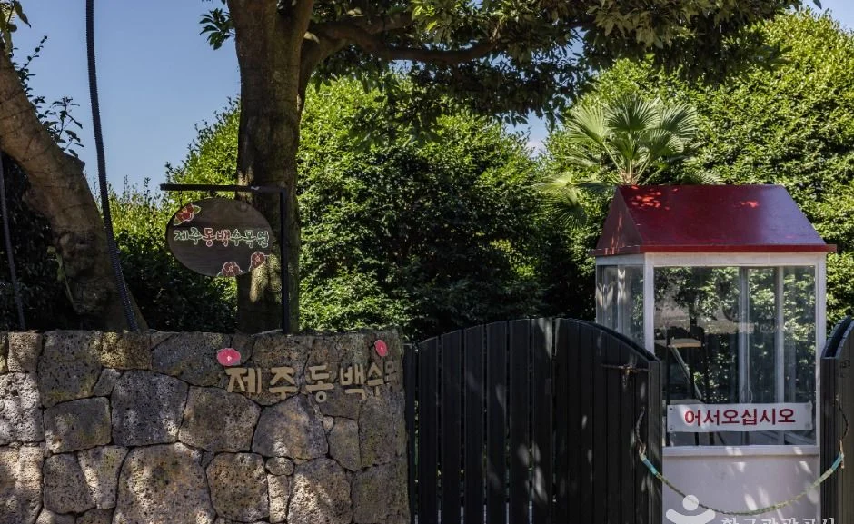
▲ 한국관광공사 위미동백나무군락 사진 묶음에 포함된 제주동백수목원 입구 간판. 촬영 시기는 자료에 없다. ⓒ 한국관광공사 · 공공누리 제1유형
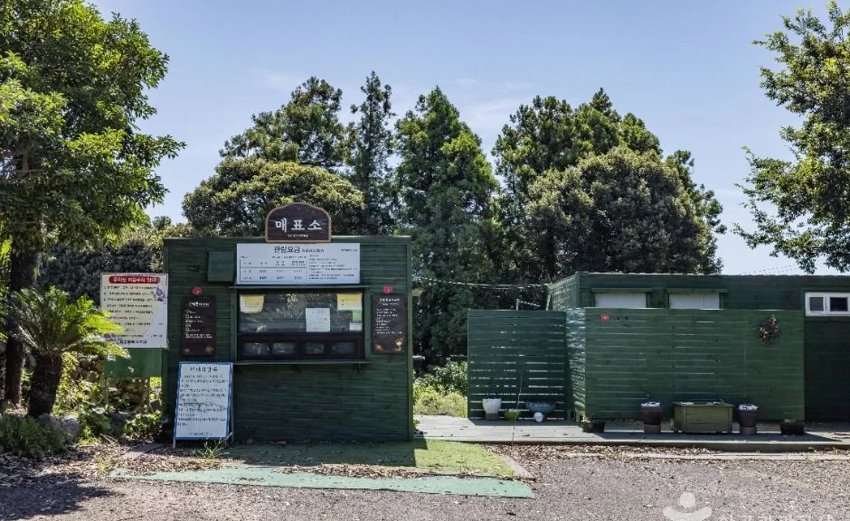
▲ 같은 사진 묶음 속 매표소. 관람요금 글자는 읽을 수 있는 크기가 아니라 금액은 적지 않는다. ⓒ 한국관광공사 · 공공누리 제1유형
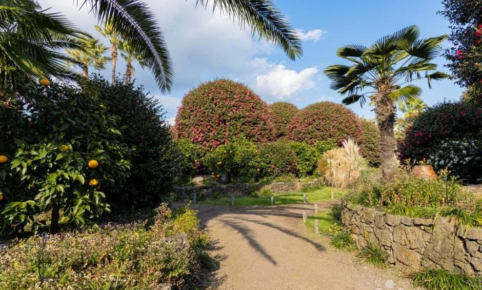
▲ 제주동백수목원의 정원 길. 촬영 시기는 자료에 없다. 위미 군락 바로 옆 별도 시설이다. ⓒ 한국관광공사 · 공공누리 제1유형
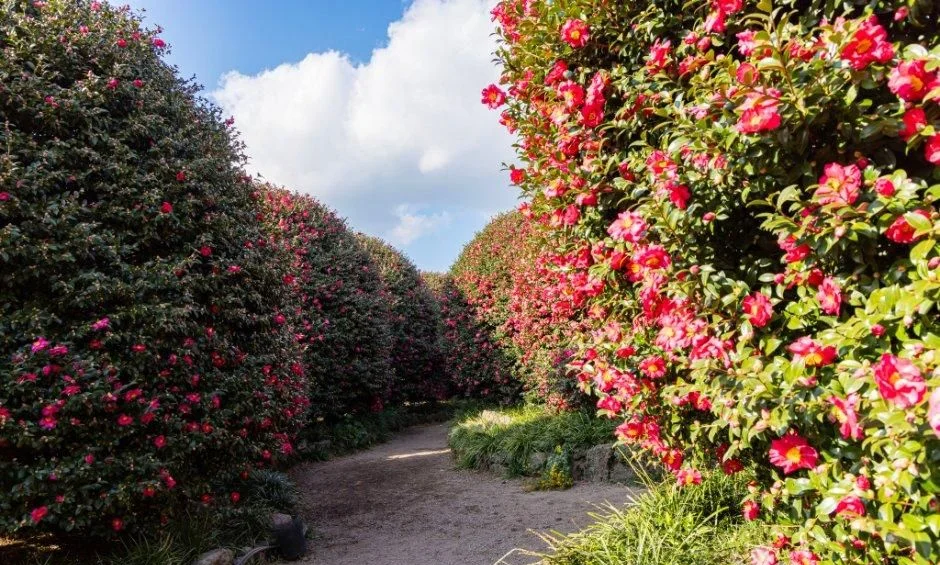
▲ 제주동백수목원에서 꽃이 핀 동백나무가 줄지은 길. 사진에 꽃이 피어 있다. ⓒ 한국관광공사 · 공공누리 제1유형
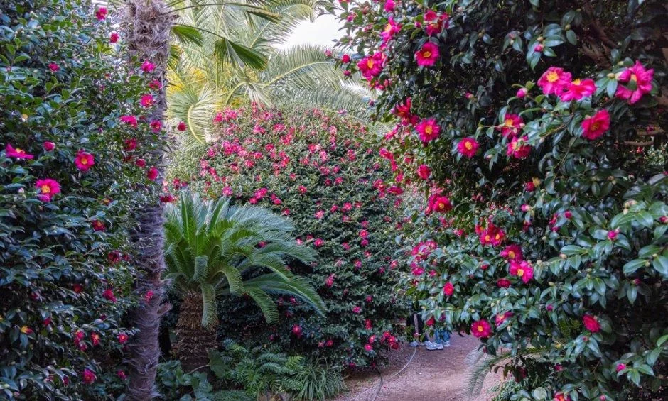
▲ 제주동백수목원 산책길 모퉁이. 분홍빛 꽃이 핀 동백나무가 보인다. ⓒ 한국관광공사 · 공공누리 제1유형
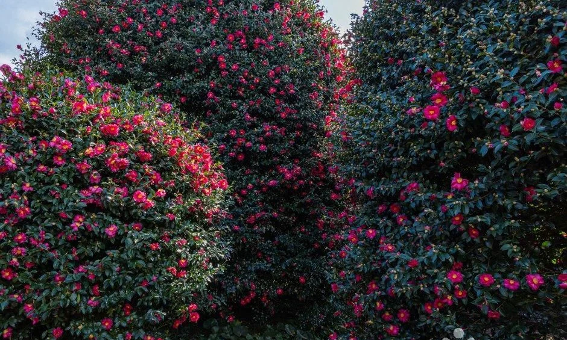
▲ 제주동백수목원의 키 큰 동백나무. 사진 설명에 품종은 적혀 있지 않다. ⓒ 한국관광공사 · 공공누리 제1유형
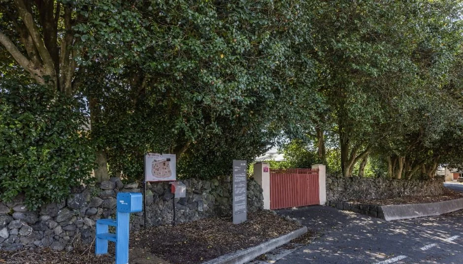
▲ 위미동백나무군락 입구 쪽 길. 촬영 시기는 자료에 없다. ⓒ 한국관광공사 · 공공누리 제1유형
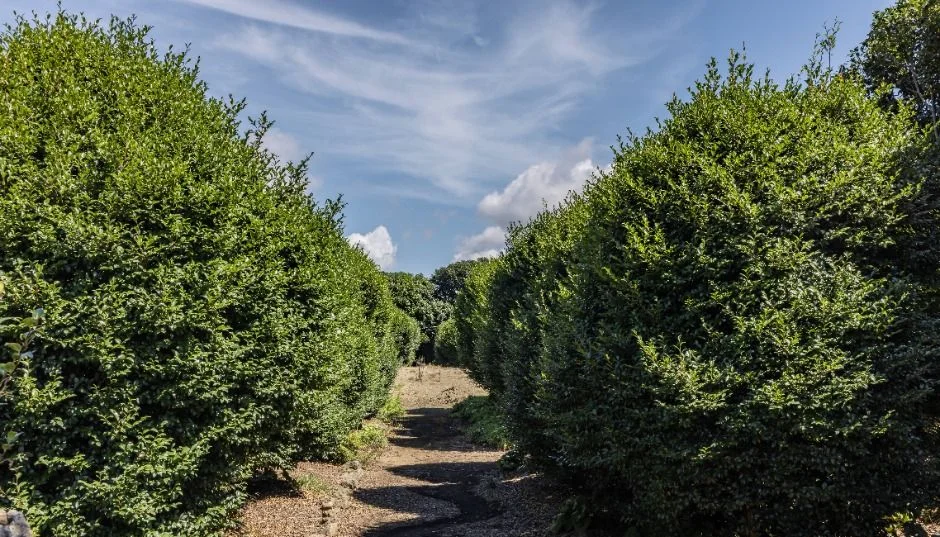
▲ 위미동백나무군락 소개 사진 속 상록 수림 사이 길. 사진 설명에 수종은 적혀 있지 않다. ⓒ 한국관광공사 · 공공누리 제1유형
4. 카멜리아힐 — 500여 종 6000여 그루, 동절기 운영 시간
한국관광공사는 카멜리아힐을 세계에서 가장 큰 동백꽃과 가장 일찍 피는 동백꽃, 향기가 나는 동백꽃까지 전 세계 500여 종 6000여 그루가 모인 동양 최대 동백 수목원으로 소개한다. 가을부터 봄까지 시기를 달리해 피는 품종이 섞여 있어, 한 시기에 모든 나무가 피는 곳은 아니다. 동백 외에 제주 자생식물 250여 종과 생태연못, 잔디광장도 있다. 카멜리아힐 공식 사이트 바로가기
| 구분 | 운영 시간 | 입장 마감 |
|---|---|---|
| 하절기·간절기(한글 표기 3월~11월, 영문 3~10월) | 08:30~18:30 | 17:30 |
| 동절기(11월~2월) | 08:30~18:00 | 17:00 |
카멜리아힐 공식 사이트 관람요금표(2026-01-20 게시 캡처 기준)는 일반 요금을 성인(만 19~64세) 12,000원, 청소년(만 13~18세) 10,000원, 어린이(생후 37개월~만 12세) 9,000원, 경로(65세 이상)·군인 10,000원, 장애인·보훈대상 및 4.3유족 9,000원으로 적고, 30명 이상 도민·단체는 성인 10,000원으로 안내한다. 같은 사이트의 관람시간표는 하절기·간절기를 08:30~18:30(17:30 발권·입장 마감), 동절기(11월~2월)를 08:30~18:00(17:00 마감)으로 적는다.
공식 사이트 표의 하절기 칸은 한글로 "3월~11월"이라고 써 11월이 겹쳐 보이지만, 비짓제주는 "3~10월 08:30~18:30(17:30 마감) / 11~2월 08:30~18:00(17:00 마감)"으로 명확히 구분한다. 따라서 11월 방문은 동절기 시간표(08:30~18:00, 입장 마감 17:00)로 보면 된다. 그래도 공식 표가 이미지로 게시돼 있으니 방문 직전 전화(064-759-0088)로 한 번 더 확인하자.
공식 표에는 연중무휴, 일몰·기상에 따른 입장 제한 가능, 반려동물은 8kg 미만이면 목줄 착용 후 입장 가능하다는 주의사항도 있다. 공용 주차장이 있다고 안내되지만 주차 요금은 공식 자료에서 확인하지 못했다.
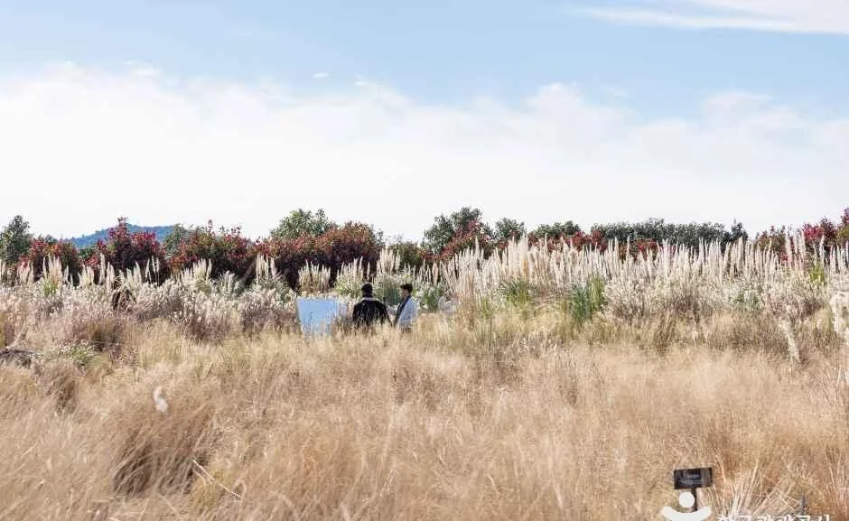
▲ 카멜리아힐 안의 억새 들판. 촬영 시기는 자료에 없다. ⓒ 한국관광공사 · 공공누리 제1유형
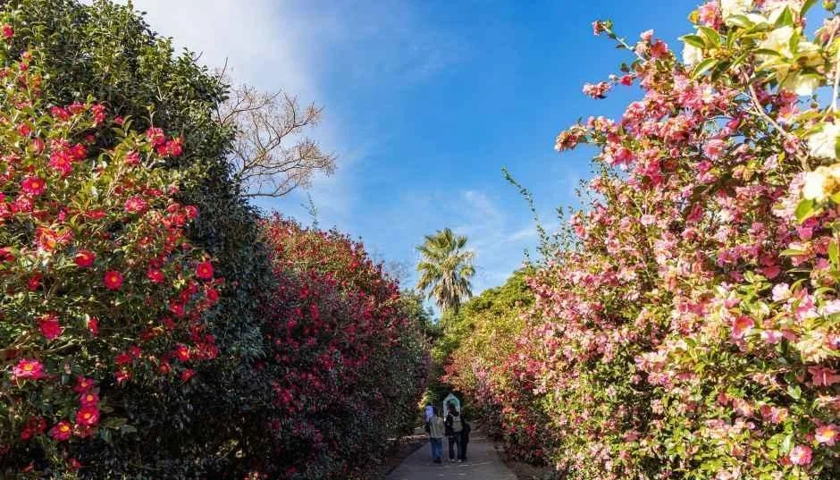
▲ 카멜리아힐의 산책로. 촬영 시기는 자료에 없다. ⓒ 한국관광공사 · 공공누리 제1유형
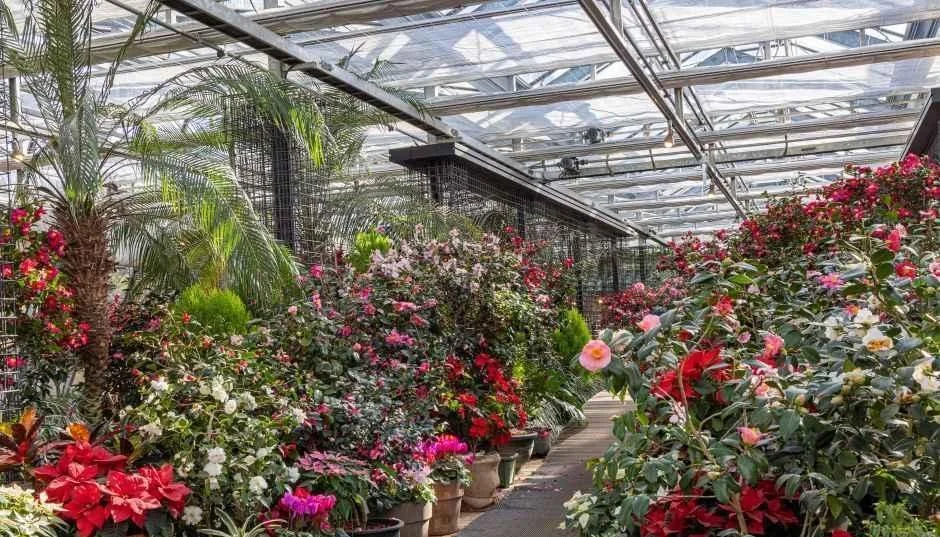
▲ 카멜리아힐 소개 사진 속 온실로 보이는 공간. 촬영 시기는 자료에 없다. ⓒ 한국관광공사 · 공공누리 제1유형
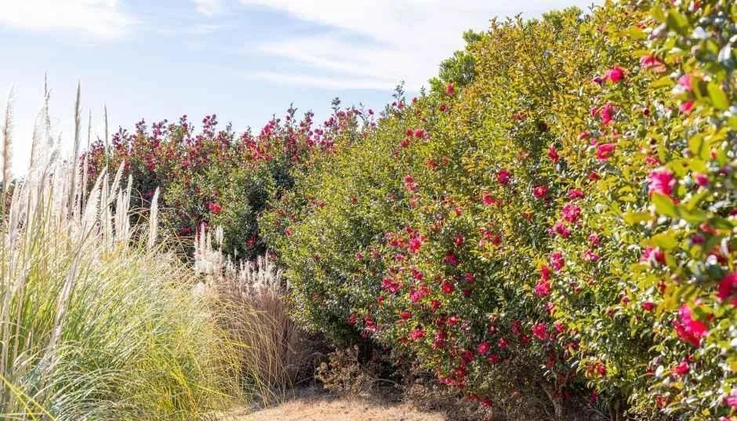
▲ 억새와 동백이 함께 보이는 정원 풍경. 촬영 시기는 자료에 없다. ⓒ 한국관광공사 · 공공누리 제1유형
5. 동백 시기 — 공식 자료로 말할 수 있는 것과 없는 것
한국관광공사는 위미 군락의 꽃을 늦가을부터 이른 봄에 걸쳐 붉게 핀다고 설명하고, 카멜리아힐은 가을부터 봄까지 품종별로 시기를 달리해 핀다고 설명한다. 두 곳 모두 공식 자료에는 "몇 월 며칠이 절정"이라는 날짜가 없다. 절정 시기를 월 단위로 단정한 글은 대부분 블로그나 후기여서 이 기사에서는 쓰지 않았다.
✅ 개화 시기 확인 요령
1) 카멜리아힐은 공식 사이트의 now·season 메뉴와 공식 SNS에서 개화 소식을 확인한다 2) 위미 군락은 제주관광정보센터(064-740-6000)에 현재 상황을 묻는다 3) 올겨울 개화 정보는 이 기사 작성 시점(2026-10-21)에는 확인하지 못했다.
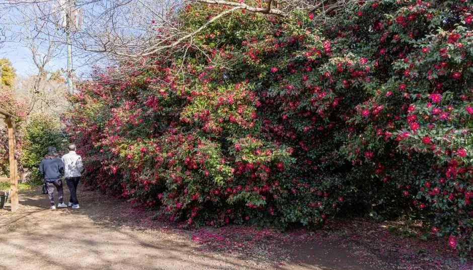
▲ 꽃잎이 길에 떨어진 카멜리아힐 동백 길. 촬영 시기는 자료에 없다. ⓒ 한국관광공사 · 공공누리 제1유형
▲ 붉은 벤치 뒤로 꽃이 핀 동백나무. 촬영 시기는 자료에 없다. ⓒ 한국관광공사 · 공공누리 제1유형
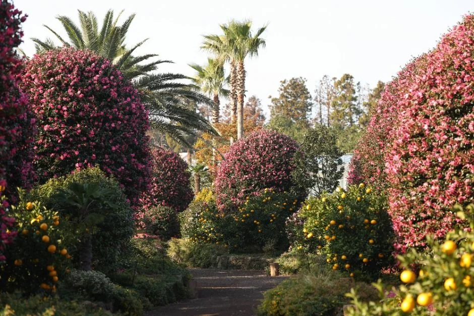
▲ 제주동백수목원 입구 쪽 정원. 귤이 달린 나무와 동백나무가 함께 보인다. ⓒ 한국관광공사 · 공공누리 제3유형(변경금지)
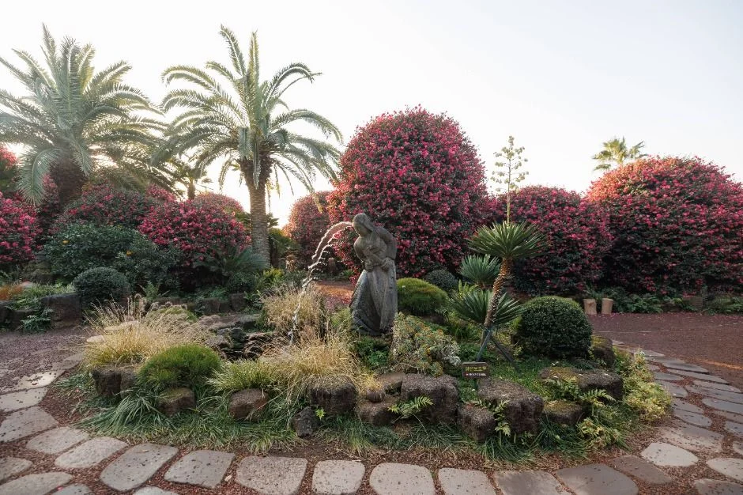
▲ 제주동백수목원 중앙의 원형 화단. 촬영 시기는 자료에 없다. ⓒ 한국관광공사 · 공공누리 제3유형(변경금지)
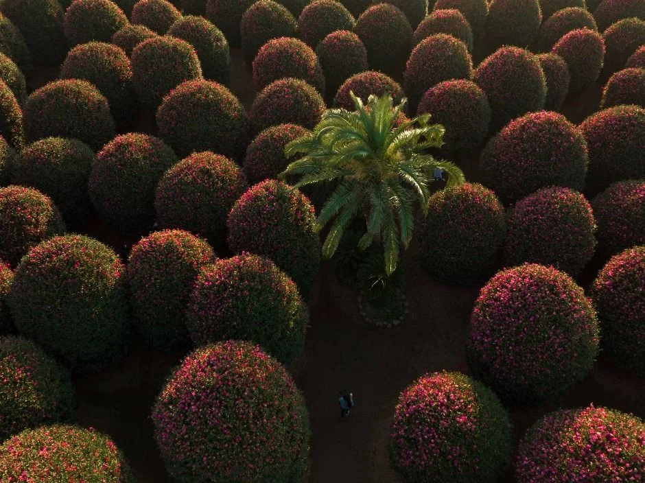
▲ 제주동백수목원을 위에서 내려다본 모습. 둥글게 다듬은 나무가 빽빽하다. ⓒ 한국관광공사 · 공공누리 제3유형(변경금지)
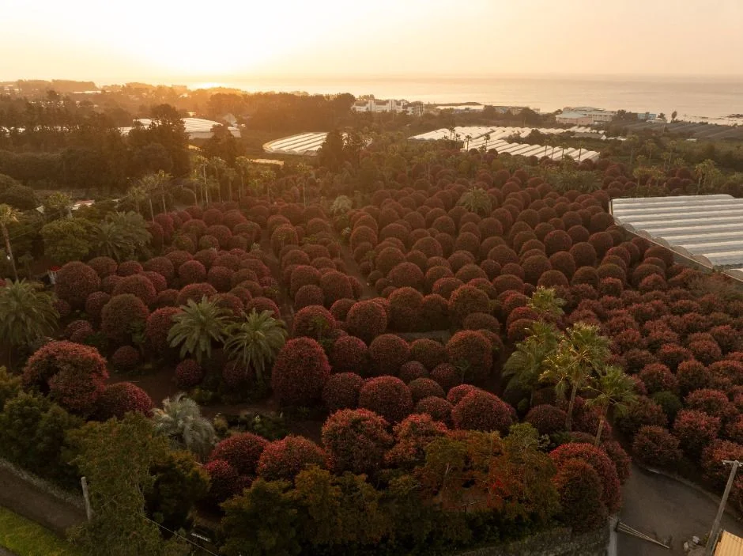
▲ 노을빛 아래 펼쳐진 제주동백수목원 일대 항공 사진. 정확한 촬영일은 자료에 없다. ⓒ 한국관광공사 · 공공누리 제3유형(변경금지)
6. 겨울 방문 순서와 확인하지 못한 항목
두 곳을 같은 날 방문한다면 카멜리아힐은 동절기 입장 마감 17:00이 있으므로 먼저 가고, 상시 개방인 위미 군락을 나중에 두는 편이 일정상 안전하다. 겨울 제주는 일몰이 이르다. 일몰 시각과 해안 코스는 겨울 협재·섭지코지 기사에서, 숲길 입장 시간은 비자림·사려니숲길 겨울 기사에서 확인할 수 있다. 렌터카와 자차 비용은 제주 렌터카 vs 자차 비교 기사를 참고하자.
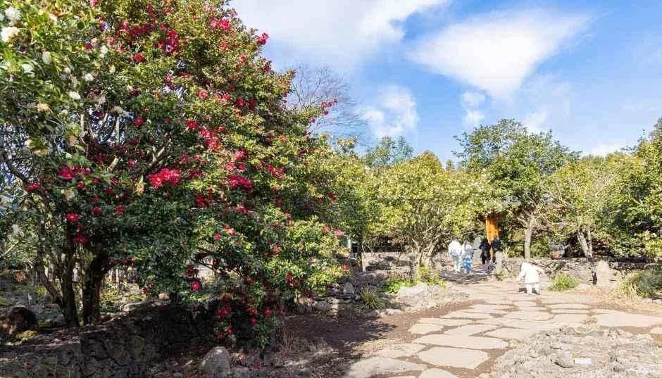
▲ 카멜리아힐의 돌길 산책로. 촬영 시기는 자료에 없다. ⓒ 한국관광공사 · 공공누리 제1유형
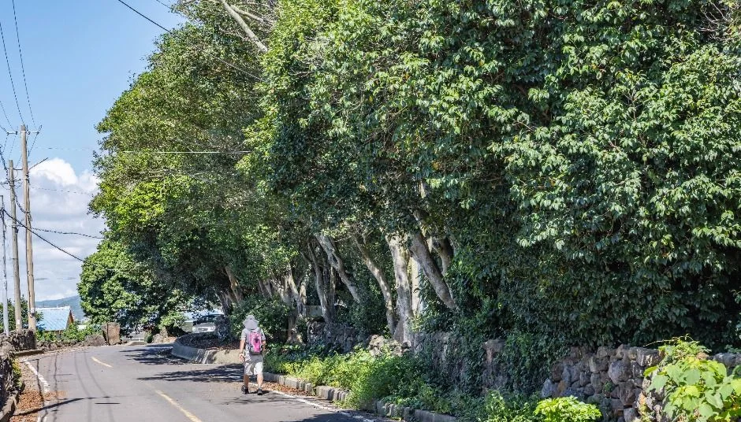
▲ 위미 군락 소개 사진 속 마을 도로. 촬영 시기는 자료에 없다. ⓒ 한국관광공사 · 공공누리 제1유형
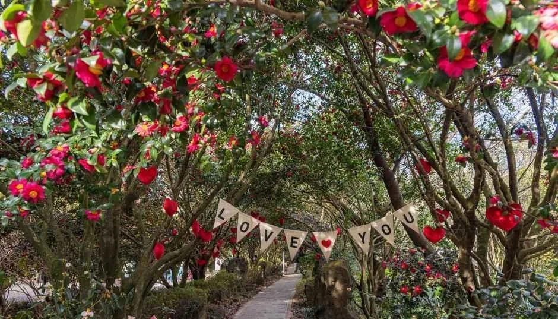
▲ 장식 깃발이 걸린 카멜리아힐 산책로. 촬영 시기는 자료에 없다. ⓒ 한국관광공사 · 공공누리 제1유형
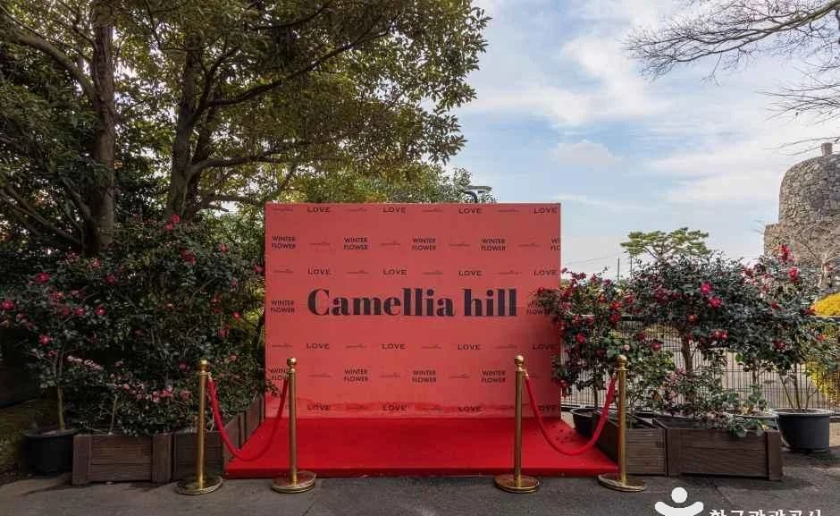
▲ 카멜리아힐의 포토월 공간. 촬영 시기는 자료에 없다. ⓒ 한국관광공사 · 공공누리 제1유형
✅ 출발 전 체크
1) 위미 군락은 상시 개방, 카멜리아힐은 동절기 입장 마감 17:00 2) 카멜리아힐 입장료는 성인 12,000원(공식 요금표), 주차 요금은 확인하지 못함 3) 위미 군락의 주차장 위치와 일부 구간 출입은 현장 확인 4) 11월은 비짓제주 기준 동절기(08:30~18:00, 입장 마감 17:00) 시간표 적용 5) 제주동백수목원은 11월 중순~2월 말 운영, 09:00~18:00(입장 마감 17:00), 성인 8,000원.
7. 정리
위미동백나무군락과 카멜리아힐은 서로 다른 장소이고, 위미는 상시 개방, 카멜리아힐은 동절기 08:30~18:00(입장 마감 17:00)이다. 카멜리아힐은 500여 종 6000여 그루가 품종별로 가을부터 봄까지 시기를 달리해 피고, 위미 군락의 꽃은 늦가을부터 이른 봄에 걸쳐 핀다.
카멜리아힐 주차 요금, 위미 군락의 주차장 위치와 출입 범위, 올겨울 절정 시기는 확인하지 못했다. 이 기사는 2026년 10월 21일 기준이므로 방문 전 공식 사이트와 전화로 확인하자.